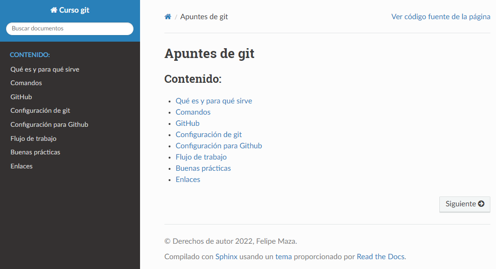

Apuntes Git
Documentación que describe cómo utilizar git y buenas prácticas que realizamos.
Cómo acceder
La documentación está accesible a través de la URL: https://ihcantabria.github.io/ApuntesGit/.

Contacto
La documentación está mantenida por Felipe Maza.
Licencia
Bajo licencia GPL v3.